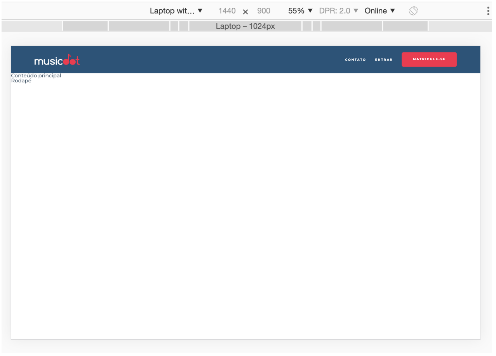
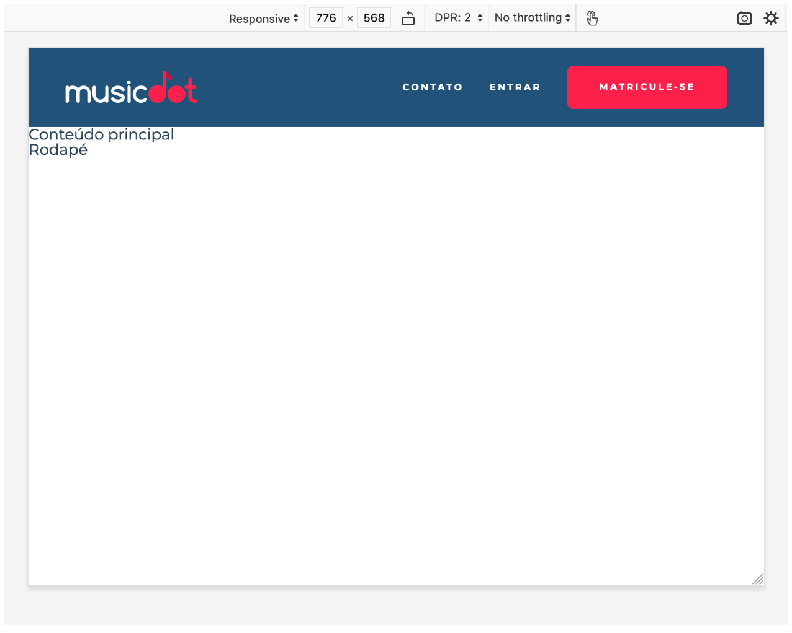

Em telas grandes e com alta resolução, o padding horizontal em porcentagem que colocamos no cabeçalho pode não ser o suficiente e acabaremos com um cabeçalho largo demais:

Para solucionar esse problema calcularemos um padding dinâmico, que garantirá que o conteúdo do cabeçalho ocupará sempre no máximo 960px, isso para qualquer tela maior que 1066px.
Outro ponto que podemos melhorar é dando um destaque para o item "Matricule-se" do menu. Deixaremos ele com o fundo vermelho #e93d50, com um espaçamento à esquerda de 1.42em e uma borda redonda com raio de 6px.
